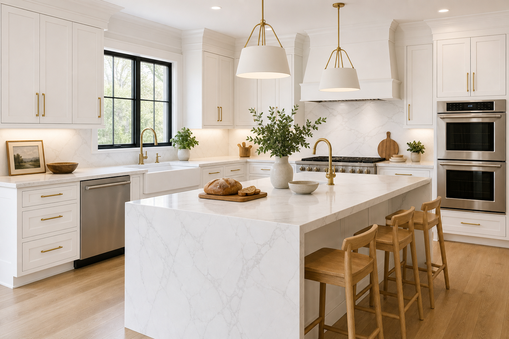

White Kitchen, Gold Hardware & Marble-Look Waterfall Island Ideas
Gold kitchen hardware works when it is treated as jewelry: a few well-chosen repeats across faucet, pulls, and lighting—paired with a calm marble-look waterfall island—reads expensive instead of busy. Kitchen designers and remodelers can help you order hardware in the right quantities and centers.
Brass, gold, and finish discipline
Choose one brass story and repeat it. If you love slim horizontal pulls, echo that language on drawers and tall doors. Avoid scattering unrelated gold tones from different vendors without comparing samples in your actual kitchen light—and ask your kitchen renovation contractor to hold finish samples next to cabinet paint before install day.
Live unlacquered brass will patina; PVD and sealed finishes stay steadier. Neither is wrong—just do not mix expecting them to match in year two.
Waterfall island and veining
Busy veining plus ornate lighting can compete. If your island quartz has strong movement, simplify pendants. If the stone is quiet, you have more room for decorative fixtures.
Waterfall returns should align at inside corners—nothing cheapens stone faster than a visibly shifted seam at eye level from the breakfast stool.
Mixed metals with stainless
Stainless appliances are neutral when cabinetry and stone are cohesive. Use gold at the sink and island seating zone to tie the room together, rather than sprinkling metallic objects everywhere.
If you want a stainless faucet on the prep sink for durability, repeat stainless once more—perhaps on a pot filler or discreet appliance trim—so gold still feels primary.
Lighting temperature and backsplash
Under-cabinet LEDs should flatter both food and finishes. Test dimmers early—gold reads best with balanced warmth, not harsh cool spots.
Subway tile stays a safe partner for brass; handmade glaze variation adds soul without fighting the island stone.
Cabinet paint, sheen, and brass undertones
Cool whites can make brass look yellow; warm whites soften the contrast. Sample large boards and view at night—LED color temperature swings the decision.
Satin or semi-gloss on trim and cabinets affects how light skims edges next to hardware. Matte looks modern but shows hand oils sooner near pulls.
Island seating, stools, and sightlines
Wood stools warm up white and gold without another metallic voice. If you choose metal legs, echo the brass finish sparingly—feet only, not every cross brace.
Allow knee space and overhang depth that matches stool height. Perched guests should not bump the dishwasher when it opens.
Ordering hardware counts without drama
Count twice: drawers versus doors, appliance panels, spice pullouts, and pantry internals. Extras ordered late may not dye-match perfectly.
Your kitchen remodel team should mark a hardware schedule on elevations so installers are not guessing centers on install day.
FAQ
Should every metal in the kitchen match?
Coordinate finishes and repeat them with intent; perfect matching is less important than a clear hierarchy.
Does gold hardware go out of style quickly?
Classic cabinet lines and restrained hardware scale age better than novelty shapes.
Can I mix polished and brushed brass?
Only with a clear hierarchy—usually one finish dominates. Two similar-but-not-quite brasses read accidental.
Does a waterfall island hurt resale?
Buyers often love it when fabrication is clean. Budget and taste vary; neutral stone movement is safer than loud bookmatch experiments.